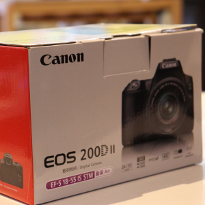
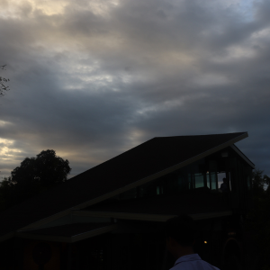
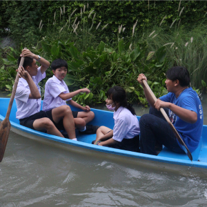
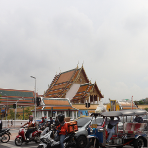

ตอนอายุ 17 แม่ซื้อกล้องตัวแรกให้เราเป็นของขวัญวันเกิด ตอนนั้นตื่นเต้นมาก อยากได้กล้องถ่ายรูปสุดๆ ไว้ถ่าย เก็บความทรงจำดีๆ กล้องที่แม่ซื้อให้คือ Canon EOS 200D II สีดำเท่ๆ ตัวกล้องเล็กๆ เบาๆ พกพาสะดวก ดีใจกับกล้องตัวนี้มากพกไปถ่ายรูปทุกที่ ถ่ายทุกอย่าง ถ่ายเพื่อน ถ่ายวิว ถ่ายอาหาร ถ่ายตัวเอง ฝึกถ่ายนู่นนี่นั่น เรียนรู้การปรับแต่งกล้อง หามุมถ่ายภาพใหม่ๆ แต่ก่อนชอบใช้มือถือถ่ายภาพ แต่กล้องมือถือภาพที่ได้มาไม่ค่อยดี ตอนแรกก็ลังเลกล้อง DSLR มันราคาแพง ตัดสินใจอยู่นาน สุดท้ายก็ตัดสินใจขอแม่เป็นของขวัญวัดเกิด กล้องตัวนี้ผ่านอะไรมาเยอะไปเที่ยวด้วยกันมาหลายที่ เก็บความทรงจำดีๆ ไว้มากมาย มีรอยขีดข่วนเต็มกล้องแต่ก็รู้สึกดีทุกครั้งเวลาเปิดภาพถ่ายเก่าๆในกล้อง



